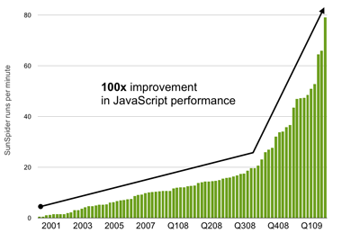
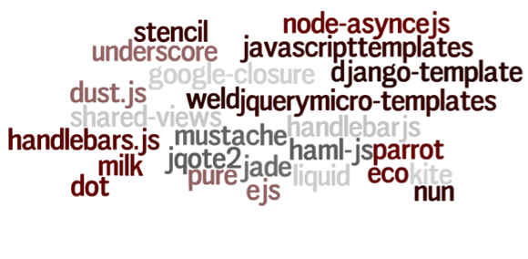

Welcome!
DISCLAIMER: this presentation may contain strongly opinionated views,
philosophical tech-rants, very little science and possibly traces of
nuts.
Homogenous Templating
template |ˈtɛmpleɪt, -plɪt|
a shaped piece of rigid material used as a pattern for processes such as cutting out, shaping, or drilling.
In ur strz, interpolejtin!
Hello ${name}!
Dynamic Server Pages
The server pages wars!
ASP
Hello <%= name %>!
JSP
Hello <%= name %>!
PHP
<p> Hello <?= $name ?>!</p>
XML/XSLT
Can haz moar puwr!

JS Templating v0.9
$('#greeting').append('Hello' + name + '
');
Bad idea
JS Templating v1.0
